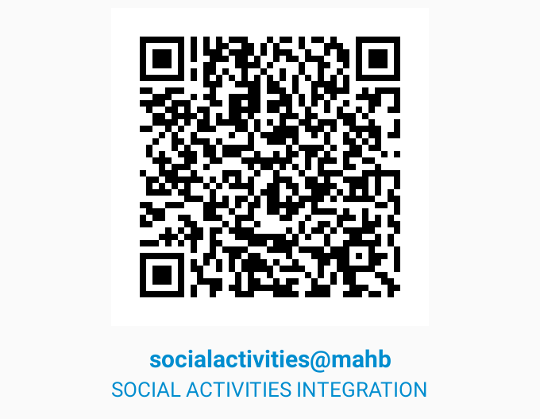

DONATIONS TO SOCIAL ACTIVITIES INTEGRATION – SAI ARE TAX-EXEMPT IN INDIA UNDER U/S 80-G OF THE IT ACT NO. DIT (E) MC/80-G/445/2002
PAN NO. OF SOCIAL ACTIVITIES INTEGRATION-AACTS0408E
ONLY FOR DOMESTIC DONORS (INDIA)
DOMESTIC DONORS FROM INDIA CAN DIRECTLY DONATE THROUGH RTGS/NEFT IN OUR BANK ACCOUNT.
BANK ACCOUNT NAME : SOCIAL ACTIVITIES INTEGRATION
BANK : BANK OF MAHARASHTRA
BANK A/C NO : 60052721989
Bank Address : MUMBAI BYCULLA E.S. PATANWAL ROAD, NEAR JIJAMATA UDHYAN, BYCULLA -EAST MUMBAI 400027 MUMBAI- 400027
MICR : 400014017
IFSC : MAHB0000183
OR
BANK ACCOUNT NAME : SOCIAL ACTIVITIES INTEGRATION
BANK : STATE BANK OF INDIA BANK
BANK A/C NO : SB A/C.NO. 33466320437
ACCOUNT TYPE : Current
BANK ADDRESS : JACOB CIRCLE, MUMBAI – 400 011
MICR : 400002036
IFSC : SBIN0001835
ONLY FOR FOREIGN DONORS
SAI IS REGISTERED UNDER FOREIGN CONTRIBUTION REGULATION ACT, 1976.REGISTRATION NO. 083780858. WE WOULD LIKE TO REQUEST OUR FOREIGN DONORS TO DO DONATION THROUGH DIRECT TO OUR FOLLOWING BANK ACCOUNT. (ONLY FOR FOREIGN DONORS)
FCRA BANK ACCOUNT NAME : SOCIAL ACTIVITIES INTEGRATION ,STATE BANK OF INDIA
BANK ACCOUNT NO : 40215247175
BANK ADDRESS : FCRA CELL, 4TH FLOOR, STATE BANK OF INDIA, NEW DELHI, MAIN BRANCH, 11 SANSAD MARG, NEW DELHI-110001
BANK SWIFT CODE: SBININBB104
IFSC CODE : SBIN0000691
DONATIONS THROUGH CHEQUE / DD
Cheque donations made should be payable to SOCIAL ACTIVITIES INTEGRATION, and send to:
Social Activities Integration
Admin Office:
Byculla Municipal School Bldg, Ground Floor, Room No.14, Near ‘S’ Bridge, Byculla (W), N.M. Joshi Marg, Mumbai – 400 011, INDIA
Phone: 091-22-2301 6976
Email : info@saingo.org
Web : www.saingo.org
You can scan the QR code for direct payment via UPI or online banking
